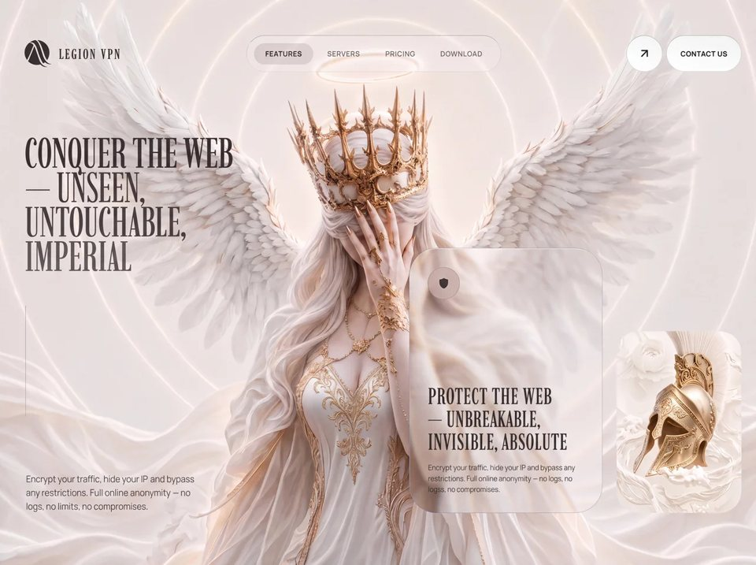

Angel Shield
Securitysecurityyilai-ai 公开页面
收录时间：2026-08-23正文：11,836 字符

本地预览图 · jpeg
完整提示词
**Build a single self-contained `index.html` (inline CSS + JS, no framework) that recreates this Legion VPN hero landing page pixel-for-pixel.** One viewport-tall page only. Do **not** render a second section, marquee, or info cards in the DOM even if you copy leftover CSS. Title: `Legion VPN`. `lang="en"`. `body` class = `stage`. Background stack container class = `flower`.
## Fonts (exact)
Google Fonts:
```
https://fonts.googleapis.com/css2?family=Imbue:opsz,wght@10..40,100..900&family=Manrope:wght@200..800&display=swap
```
Preconnect `fonts.googleapis.com` and `fonts.gstatic.com` (gstatic `crossorigin`).
```
--font-sans: "Manrope", ui-sans-serif, system-ui, sans-serif;
--font-display: "Imbue", serif;
```
Body: Manrope. All display/headlines/logo: Imbue. All UI labels: Manrope, 12px, weight 700, uppercase, letter-spacing `0.05em`.
## Palette / surface
- Page `html, body`: `#000`, `overflow-x: hidden`
- Fixed background fallback: `#f4f0ea`
- Ink: `#2F2F2F`
- Muted body: `rgba(47,47,47,0.64)`
- Grid stroke: `#64748b` at 0.1 opacity
- Glass buttons: `linear-gradient(to top right, #fff, #f3f4f6)` with border `1px solid rgba(47,47,47,0.18)` and brighter top edge `rgba(47,47,47,0.3)`
- Button hover: `linear-gradient(to top right, #e5e5e5, #fff)`
- Easing everywhere: `cubic-bezier(0.16, 1, 0.3, 1)`
## Exact image URLs (do not substitute)
**FRONT lily** (visible default layer + glass-card clone):
```
https://images.higgs.ai/?default=1&output=webp&url=https%3A%2F%2Fd8j0ntlcm91z4.cloudfront.net%2Fuser_38xzZboKViGWJOttwIXH07lWA1P%2Fhf_20260821_051344_66a21fb2-1bb6-4e29-9946-eb6da7611bcc.png&w=1280&q=85
```
**BACK / reveal lily** (only visible through the morph trail):
```
https://images.higgs.ai/?default=1&output=webp&url=https%3A%2F%2Fd8j0ntlcm91z4.cloudfront.net%2Fuser_38xzZboKViGWJOttwIXH07lWA1P%2Fhf_20260819_080405_993b3b84-843c-4105-8e78-0ebf9c43b89f.png&w=1280&q=85
```
**Helmet ornament crop:**
```
https://flick-award-65707097.figma.site/_assets/v11/09548c2c4b3f57f6d08ba1a3eee3341c34f989d2.png
```
All Higgs images: `referrerpolicy="no-referrer"`, `object-fit: cover`.
## Layer stack (fixed, full viewport, `pointer-events: none`, z-index 0)
Container `#bg-media-container.flower`, `position:fixed; inset:0; background:#f4f0ea`.
Z-order, back → front:
1. `#reveal-layer` `<img>` — BACK lily, `z-index:0`. Initial mask = `linear-gradient(transparent, transparent)` so it is fully hidden until the trail paints it.
2. `#bg-image` `<img>` — FRONT lily, `z-index:1`, alt `"Legion Background"`.
3. `#grid-overlay` SVG, `z-index:2`, opacity `0.1`. Pattern 48×48, path `M 48 0 L 0 0 0 48`, stroke `#64748b`, stroke-width `0.6`. Pattern `x/y` are animated from JS for parallax.
UI sits in `#main-layout` above this: `position:relative; z-index:10; min-height:100vh; max-width:1800px; margin:0 auto; padding:48px; display:flex; flex-direction:column; justify-content:space-between`.
## Header (3 columns)
Animate in: `fadeSlideDown` 1.2s, easing above, `forwards`. Padding `16px 0`. `justify-content: space-between`.
**Left — logo**
- SVG `viewBox="0 0 57 56"`, 48×48px, fill `#2F2F2F`, 4 paths (abstract winged/laurel Legion mark). Hover: scale `1.1` in 500ms.
- Wordmark `LEGION VPN`: Imbue, 24px, weight 500, uppercase, letter-spacing `0.12em`, color `#2F2F2F`. Gap 12px.
**Center — glass pill nav** (`#nav-pill`)
- Height 64px, padding `8px 12px`, radius 9999px, gap 4px.
- Border: `1px solid rgba(47,47,47,0.15)`, top `rgba(47,47,47,0.3)`, bottom `rgba(47,47,47,0.08)`. Hover border `rgba(47,47,47,0.3)`.
- Fill: `linear-gradient(to top right, rgba(255,255,255,0.02), rgba(255,255,255,0.25), rgba(255,255,255,0.01))`.
- `backdrop-filter: blur(64px)`.
- Buttons: Features (default `.active`), Servers, Pricing, Download. Padding `10px 20px`, radius pill, 12px/700/uppercase/`0.05em`, color `rgba(47,47,47,0.6)`, hover `#2F2F2F`.
- Active: color `#2F2F2F` + `::before` inset pill `rgba(47,47,47,0.12)`. Click only toggles `.active`. No routing.
**Right — actions**
- Circle 64×64: same white gradient + border. Lucide-style external-link icon (line 7,17 → 17,7 + polyline 7,7 17,7 17,17), 24px, stroke 2.
- Pill `CONTACT US`, height 64, padding `0 24px`, same chrome.
- Gap 6px.
**Mobile:** at `max-width:768px` hide nav + actions, show 44×44 glass hamburger (`rgba(255,255,255,0.3)`, blur 12px, border `rgba(47,47,47,0.2)`). Button exists; no drawer.
## Hero grid
`display:grid; grid-template-columns:1fr 1fr; gap:32px; align-items:end; flex:1; margin-bottom:48px`.
### Left column
`flex column; justify-content:space-between; align-self:stretch; padding-top:96px`.
H1 (Imbue, `5.4vw`, line-height `0.82`, weight 400, tracking `-0.01em`, uppercase, `#2F2F2F`), stacked:
```
CONQUER THE WEB
— UNSEEN, ← .line-light weight 300, rgba(47,47,47,0.95)
UNTOUCHABLE, ← .line-90 rgba(47,47,47,0.9)
IMPERIAL ← .line-80 rgba(47,47,47,0.8)
```
Each of those three is `display:block`. Animation: `fadeSlideUp` 1.4s, delay 0.2s, `both`.
Then a 1×220px vertical rule, gradient `rgba(47,47,47,0.4) → rgba(47,47,47,0.15) → transparent`, `transform-origin:top`, `scaleYIn` 1.5s delay 0.4s, margin `24px 0`.
Then body copy, Manrope 15px/300, `rgba(47,47,47,0.64)`, line-height 1.6, width 320px:
> Encrypt your traffic, hide your IP, and bypass any restrictions. Full online anonymity — no logs, no limits, no compromises.
`fadeIn` 1.4s delay 0.5s.
### Right column
`flex; align-items:flex-end; justify-content:flex-end; gap:24px`.
**Liquid-glass card** `#glass-card`: 340×460, radius 48px, transparent, border `1px solid rgba(47,47,47,0.15)`, padding 32px, column `space-between`, `overflow:hidden`. Enter: `fadeSlideUpCard` 1.5s delay 0.4s.
Inside, three layers:
1. `#dup-video-container` — absolute, `overflow:hidden`, `pointer-events:none`, z-index 0. Every rAF, pin it to the **viewport** so the card becomes a window onto the same background:
```
left = -card.getBoundingClientRect().left
top = -card.getBoundingClientRect().top
width = document.documentElement.clientWidth
height = document.documentElement.clientHeight
```
Two cover imgs inside, `transform:scale(1.06)`, `filter: url(#liquid-glass-refraction)`:
- `#dup-reveal` — BACK lily, z-index 0, same hidden initial mask
- `#dup-image` — FRONT lily, z-index 1
So the glass card shows a **refracted, slightly zoomed clone** of the hero lilies, aligned with the page.
2. `#glass-card-overlay` — inset 0, radius 48, `background:rgba(255,255,255,0.05)`, inset highlight `0 1.5px 2px rgba(255,255,255,0.3)` and inset shadow `0 -1px 2px rgba(0,0,0,0.15)`, z-index 1, no pointer events.
3. Content, relative z-index 10:
- Top: 56×56 circle, `rgba(255,255,255,0.05)`, border `rgba(47,47,47,0.15)`, blur 80px, filled shield icon 20px `#2F2F2F`. Card hover: icon scale 1.05 / 500ms.
- Bottom heading Imbue 40px/40px/400/uppercase/tracking `0.02em`:
```
PROTECT THE WEB
— UNBREAKABLE, ← .light weight 300
INVISIBLE, ABSOLUTE
```
- Same anonymity sentence, 12px/19px/300, `rgba(47,47,47,0.5)`.
**Helmet card** `#helmet-card`: 220×320, radius 40px, border `1px solid rgba(255,255,255,0.2)`, overflow hidden. Image cover, `scale(1.40) rotate(15deg)`. Hover: `scale(1.46) rotate(18deg)` in 1s same easing. Enter: `fadeSlideUpHelmet` 1.6s delay 0.6s (from `translateY(80px) scale(0.95)`).
## SVG liquid-glass filter (exact, hidden 0×0 svg)
`filter#liquid-glass-refraction`, region `x="-30%" y="-30%" width="160%" height="160%"`:
1. `feTurbulence` fractalNoise, `baseFrequency="0.012 0.015"`, `numOctaves="3"`
2. Boost SourceAlpha via color matrix `0 0 0 0 0 0 0 0 0 0 0 0 0 0 0 0 0 0 100 0`
3. `feGaussianBlur` stdDeviation **45**
4. `feFuncA` linear slope **-1.3** intercept **1** → edge mask
5. Composite noise × edge (`arithmetic k1=1`)
6. Chromatic displacement of SourceGraphic:
- R scale **65**
- G scale **56**
- B scale **47**
- isolate each channel with color matrices, `feBlend mode="screen"` R+G then +B
This is edge-only refraction + RGB split. Apply **only** to the duplicated images inside the glass card, not the full-page lilies.
## Mouse morph-reveal trail (implement exactly — not a CSS circle)
Not a radial spotlight. Organic morphing blob trail that **punches holes in the front lily** and **paints the back lily in the same shape**. Same trail drives both the full-page layers and the glass-card clones.
Constants:
```
TRAIL_MAX_POINTS = 60
TRAIL_HEAD_R = 140
TRAIL_NOISE_AMP = 44
TRAIL_BLOB_PTS = 24
TRAIL_FADE_SPEED = 0.92
TRAIL_SAMPLE_DIST = 8
```
Each `MorphTrailLayer`:
- Hidden offscreen canvas (`display:none`) sized to `.flower` via `getBoundingClientRect`
- Targets are cover-fit `<img>`s
- Every active frame: `maskImage = url(canvas.toDataURL())`, size `100% 100%`, no-repeat (set both `mask*` and `-webkit-mask*`)
Two layers, **same trail**:
- `invert=false` → FRONT (`#bg-image`, `#dup-image`): fill canvas white, then `destination-out` blobs = holes
- `invert=true` → REVEAL (`#reveal-layer`, `#dup-reveal`): clear canvas, white blobs = only the trail shows
Mouse on **`.stage`**: `mousemove` / `mouseenter` / `mouseleave`. Convert to flower canvas space:
```
scaleX = canvas.width / rect.width
x = (clientX - rect.left) * scaleX
```
same for y.
Per frame:
```
targetR = hovering ? 140 : 0
headRadius += (targetR - headRadius) * (hovering ? 0.14 : 0.04)
```
When hovering and `headRadius > 5`, if distance from last sample `> 8px`, push `{x,y,r:headRadius,alpha:1,seed:random*100}`; cap 60.
Decay: `alpha *= 0.92; r *= 0.995`; remove if `alpha < 0.01`.
`time += 0.016`.
Also draw a live head blob at the current mouse with current `headRadius` and a stable `headSeed`. Leave stage → head lerps shut, trail dies. After trail is gone, render one rest frame so front is fully opaque and reveal is fully hidden.
`drawMorphBlob(ctx, cx, cy, r, t, seed)` — skip if `r < 2`. 24 points:
```
n1 = sin(angle*3 + t*1.4 + seed) * 0.45
n2 = sin(angle*5 - t*0.9 + seed*2.3) * 0.3
n3 = cos(angle*2 + t*1.8 + seed*0.7) * 0.25
noise = (n1+n2+n3) * 44 * (r/140)
```
Closed path via midpoints + `quadraticCurveTo` (organic blob, not a circle). Fill white. Use each point’s `alpha` as `globalAlpha`.
Result: moving the mouse leaves a morphing organic wipe that cuts the front lily away and paints the second lily along a fading trail.
## Grid parallax (same rAF)
```
cx = mouseX/width - 0.5
gridOffset.x += (cx * 16 - gridOffset.x) * 0.06
```
same for y. Write onto the SVG pattern’s `x` and `y` attributes (2 decimal places). Amplitude 16px, lerp 0.06.
## Entrance keyframes (exact)
```
fadeSlideDown from ty -40
fadeSlideUp from ty 50
fadeSlideUpCard from ty 60
fadeSlideUpHelmet from ty 80 + scale 0.95
scaleYIn from scaleY 0, origin top
fadeIn from ty 30
```
All to opacity 1 / identity. Timing as listed above.
## Responsive
`max-width: 1024px`: layout padding 24; hero 1 column; heading `10vw`; hero-left padding-top 48; cards wrap start.
`max-width: 768px`: hide desktop nav/actions; show hamburger; glass card width 100%; helmet 180×260; heading `12vw`.
## Constraints
- One HTML file. No comments in code.
- No second-section markup. No fake pages behind nav.
- Do not replace the three image URLs.
- Do not simplify liquid glass to blur-only. Do not simplify the trail to a CSS radial mask.
- Glass card background must stay aligned with the page lilies while scrolling/resizing (continuous rAF sync).
- Wordmark/UI stay sharp on top; they are not masked. Only the lily `<img>`s are masked.把上面的提示词完整复制到支持长文本的 AI 工具中，再按需要替换品牌名、配色与文案。提示词描述的是整页结构与动效节奏，生成后建议在真实浏览器里检查首屏加载和移动端表现。
来源与版权
该条目来自公开提示词页面，原始出处信息未随页面提供。
提示词文本与预览素材的版权归原作者或原平台所有，本站仅作索引与归档。若你是权利人并希望移除本条内容，请通过联系方式告知。